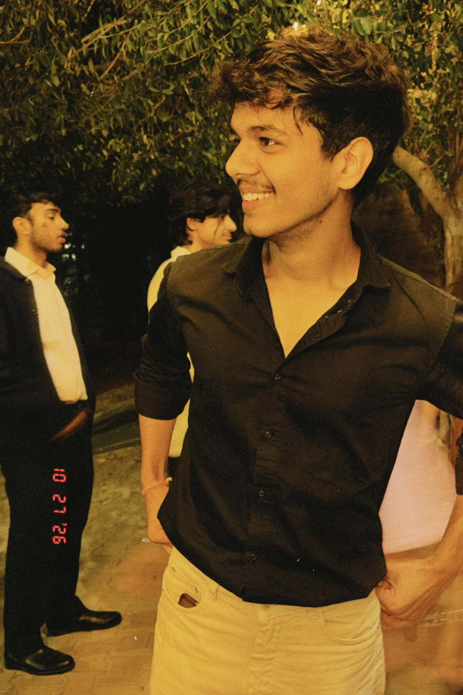

ASTROPHYSICS & AI
EXPLORATION
cosmo-ai
Deep learning project analyzing cosmological survey data and spectral redshift matrices to model cosmic structure formation and analyze gravitational lensing patterns.
I'm Ashish, a passionate Software Developer & Creative Technologist. I build modern, responsive, and user-friendly web applications using cutting-edge technologies. From turning ambitious ideas into polished digital experiences to developing real-time APIs and data-driven systems, I focus on clean code, seamless performance, and reliable delivery. Let's build something exceptional together!

Modern programming languages and infrastructure tools I leverage to build responsive web apps, real-time media streams, and data systems.
Component-driven interactive web interfaces, reactive state management, custom hooks, and modern client-side rendering.
Scalable event-driven non-blocking I/O backends, asynchronous stream handling, and fast server-side execution.
Lightweight RESTful API server routing, custom middleware pipelines, authentication handling, and controller architecture.
Full-duplex persistent bidirectional event streams, binary data framing, and sub-10ms state synchronization.
Low-latency peer-to-peer audio/video streaming, NAT traversal (STUN/TURN), and real-time DataChannels.
Supervised and unsupervised learning, classification pipelines, regression modeling, feature engineering, and model evaluation.
Multi-layer neural network architectures, PyTorch tensor workflows, computer vision models, and GPU-accelerated inference.
Dense vector embeddings, hybrid semantic retrieval, context compression, and hallucination guardrails.
Containerized microservices orchestration, multi-stage builds, and isolated production environments.
High-throughput in-memory caching, pub/sub messaging channels, rate limiting, and real-time session stores.
Flexible NoSQL document modeling, high-performance aggregation pipelines, and resilient distributed persistence.
Hands-on applications built to solve real challenges — spanning astrophysics AI, semantic retrieval, global WebRTC networking, and offline life-safety.
Deep learning project analyzing cosmological survey data and spectral redshift matrices to model cosmic structure formation and analyze gravitational lensing patterns.
Intelligent document search pipeline combining dense vector embeddings with BM25 lexical ranking and contextual guardrails for fast, grounded answers.
Worldwide student collaboration network delivering sub-50ms peer-to-peer WebRTC video chat, Redis pub/sub signaling, and campus domain verification.
Offline-first web app caching verified emergency dispatch numbers across 190+ countries for travelers with zero cellular access, with instant one-tap hardware dialing.
Open for freelance projects, developer contracts, internships, and collaborative ventures. Feel free to reach out directly!